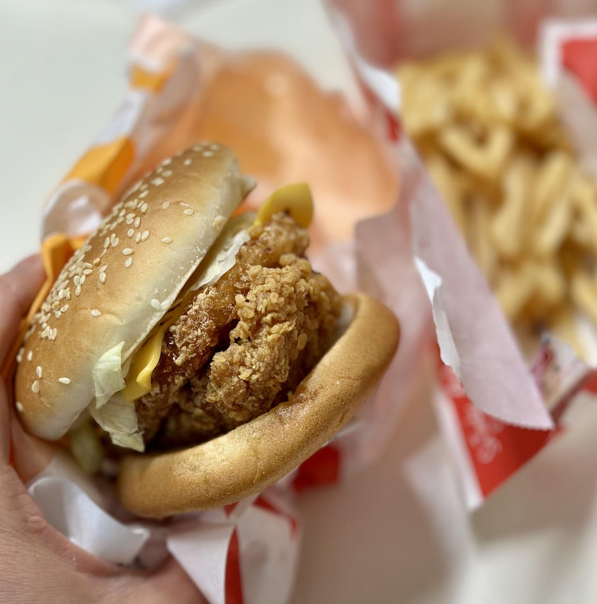

KFC의 징거타워버거에 관한 기록
개인적으로 햄버거를 참 좋아한다. 다만 약간의 특이한 점을 있다면 번이 눌리는 걸 극도로 싫어한다는 점 정도가 있다. 번의 부드럽고 살짝 바삭거림이 속 재료와 함께 푹 씹히는 식감을 참 좋아한다. 그래서 누군가 두꺼운 버거를 꽉꽉 눌러 먹는 걸 보면 왜 햄버거를 먹나 그런 생각만 한다.
왜 번 이야기를 하냐면 이번에는 (주관적으로) 번이 아름답기로 유명한 동네 KFC의 햄버거를 먹은 기록을 쓰기 위함이다. 이번에는 KFC의 징거타워버거가 주인공이다. 물론 세트로 주문했으며 배달이 아닌 직접 테이크아웃으로 배달앱 대비 700원 정도 저렴한 비용을 지불했다.
 야채들이 숨바꼭질을 좋아하는 듯
역시 집 주변 수제버거와 패스트푸트 체인 햄버거집을 통틀어 번이 가장 맛있고 변형도 적은 KFC다. 이러니 종종 먹을 수밖에 없다. 사진은 사실 손으로 힘을 주는 바람에 번이 약간 찌그러진 것 같은데 탄력도 좀 있는 편이라 사진을 찍고 바닥에 놓자 거의 원래대로 돌아왔다. 역시 아름다운 번이다.
안에는 양상추와 치즈 그리고 KFC의 핵심인 치킨 패티와 함께 해시브라운 패티도 들어있었다. 소스는 전형적인 징거버거 특유의 새콤매콤느끼한 맛이다.
치킨의 두께가 차이가 있는 지는 잘 모르겠지만 해시브라운이 추가되어 두께는 확실히 징거버거에 비해 두껍다. 실제로 한 입에 완전히 베어 물기엔 힘든 수준의 두께였다. 그래서 이름이 타워버거인 모양이다. 하지만 그렇다고 막 두꺼운 건 아니고 적당히 먹을 수준은 되는 두께였다.
맛은 징거버거 맛이었다. 치킨은 닭가슴살이었지만 심하게 퍽퍽하지도 않고 개인적으로 선호하는 맛이었다. 다만 해시브라운이 치킨과 야채의 존재감을 희석시키는 느낌을 받았다.
식감은 확실히 풍족하게 씹히는 느낌은 좋았다. 다만 푹신한 번과 아삭한 야채 그리고 바삭하고 쫗깃한 치킨 패티가 느껴지는 와중에... 이번에도 해시브라운의 물컹한 식감이 방해를 한 것이 문제였다.
음료와 감자튀김은 뭐라 할 말은 없는 그냥 평범했다. 다만 동네 KFC는 포장 시에도 음료를 직접 담아가는 시스템인데 솔직히 많이 귀찮았다는 건 문제 삼을 수 있을 것 같다.
결론
해시브라운이 많은 것을 앗아간 버거
맛 자체는 괜찮은 편이었다. 평범한 KFC의 징거버거 맛이다. 그저 해시브라운이 걸림돌이 되었을 뿐이다.
덕분에 징거타워버거 자체는 다시 시켜 먹을 생각은 들지 않을 것 같다. 좀 두꺼워지니 먹기가 힘들다는 점도 있지만 안 그래도 안 어울리는 해시브라운이라는 존재가 칼로리까지 뻥튀기니 거부감이 들 수밖에 없는 것 같다.
그래서 다시 시켜먹는다면 역시나 베스트셀러인 징거버거가 선호될 것 같다.
어쨌든 이 글은 매우 주관적이며, 이 글을 쓰는 작자는 햄버거를 아주 좋아하고, 집 주변의 KFC는 번이 아주 푹신하고 안 찌그러져 있다는 게 그저 마음에 들어하는 사람이 쓴 글이라는 점을 참고하자.